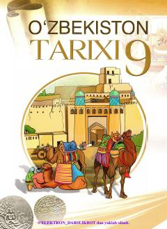

9O9-sinf o'quvchilari uchun XVI-XIX asrlar O'zbekiston tarixi darsligi.
Mazkur darslik umumiy o'rta ta'lim maktablarining 9-sinf o'quvchilari uchun mo'ljallangan bo'lib, XVI-XIX asrlardagi O'zbekiston tarixini yoritadi. Kitobda Shayboniylar, Ashtarxoniylar, Mang'itlar sulolalari, Qo'ng'irotlar va Minglar hukmronligi davridagi siyosiy, ijtimoiy-iqtisodiy hamda madaniy jarayonlar batafsil bayon etilgan.